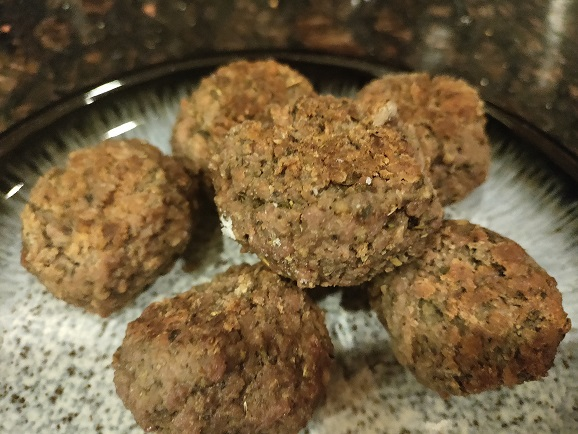

Beyond Meat Meatballs

Italian-style meatballs made out of Beyond Meat plant-based ground "meat". You can easily use Impossible Foods
grounds as well, but Beyond is sold in a 1lb. package while Impossible in a 3/4 pound package, so it's not quite
as easy to make 4lbs. at a time.
Ingredients
- 4 large eggs
- 1/4 cup Italian seasoning
- 4 tsp. salt
- 4 tsp. ground black peppper
- 4 tsp. garlic powder
- 4 lbs. Beyond Meat Plant-Based Ground Beef
- 2 cups panko bread crumbs
Instructions
-
Preheat oven to 375 degrees fahrenheit.
-
In a large mixing bowl, combine eggs, Italian seasoning, salt, pepper, and garlic powder. Mix until will
combined.
-
Add Beyond Meat grounds and panko crumbs to egg & spices mixture. Mix well, until panko crumbs and egg &
spice mixture are evenly combined throughout Beyond Meat grounds.
-
Form mixture into balls, slightly smaller than a golf ball, and place them onto rimmed baking sheets. The
mixture should yield 40-50 meatballs.
-
Bake for approximately 15 minutes, turning the meatballs twice - once at 5 minutes, and once at 10 minutes.
-
Remove from the oven, and transfer from baking sheets to something else for them to cool - they will hold
their shape well enough even if piled on top of each other at this point, but you will not want to let them
cool on the baking sheet or they will end up sticking to it.
-
The meatballs can be frozen and will last a good while - I recommend cooling them overnight in the fridge
before freezing.